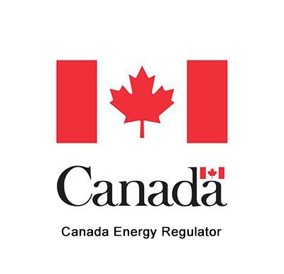
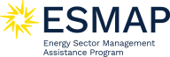

Impacto
En todo el mundo, OpenStreetMap ha demostrado su valor en la generación de datos abiertos de alta calidad para apoyar el desarrollo sostenible y el acceso a la energía. Utilice los botones siguientes para explorar ese impacto: quién utiliza los datos, por qué son importantes y cómo cartografiamos la red de forma responsable.
Casos de uso estratégicos: energía, respuesta ante desastres y desarrollo
El valor único de OpenStreetMap en la creación de datos de alta calidad para el desarrollo sostenible ha quedado demostrado por múltiples iniciativas en todo el mundo:


-
En Plataforma mundial de electrificación y Atlas de energías renovables distribuidas desarrollado y utilizado por el Banco Mundial, apoya la planificación de la electrificación rural en 58 países. El sitio Rezonificación ayuda a identificar y explorar zonas con gran potencial para proyectos de desarrollo de energía solar, terrestre y eólica marina en 249 países. Utilizando datos de OpenStreetMap sobre líneas de transmisión, subestaciones, carreteras, edificios y asentamientos, ayudan a identificar las poblaciones sin conexión a la red y a informar sobre la planificación de las energías renovables y las estrategias tanto de conexión a la red como fuera de ella. GEP-OnSSET, el software de código abierto detrás de la Plataforma de Electrificación Global, se basa en gran medida en los datos de la red eléctrica de OpenStreetMap.
-
El Banco Mundial EnergyData.info alberga más de 1.072 conjuntos de datos relacionados con la energía, 533 de los cuales dependen directamente de datos de OpenStreetMap. El Banco Mundial utiliza estos datos para financiar y apoyar proyectos de infraestructuras energéticas en países de renta baja y media, como la ampliación del acceso a la energía, la modernización de los sistemas eléctricos y la promoción de soluciones energéticas limpias. También sirve de base a importantes publicaciones y crea informes para los responsables de la toma de decisiones, tales como Minirredes para 500 millones de personas.
-
En Equipo humanitario de OpenStreetMap proporciona datos geoespaciales abiertos y de alta calidad para orientar a los responsables de la toma de decisiones en las primeras fases de respuesta ante una catástrofe. Con más de 419.000 cartógrafos voluntarios, HOT colabora con proveedores de imágenes por satélite como Maxar y organismos humanitarios como la Cruz Roja para garantizar que las decisiones de emergencia estén respaldadas por datos fiables y verificables. Especialmente a medida que los fenómenos meteorológicos extremos se hacen más frecuentes, el acceso a datos precisos sobre la red eléctrica es cada vez más importante para el equipo humanitario de OpenStreetMap.
-
En Explorador del acceso a la energía es la primera plataforma geoespacial interactiva en línea y de código abierto que permite a planificadores energéticos, empresarios de energías limpias, donantes e instituciones de desarrollo identificar áreas de alta prioridad para intervenciones de acceso a la energía. Con más de 100 organizaciones asociadas y ocho países participantes, entre ellos India, Nigeria y Etiopía, se basa en gran medida en datos de OpenStreetMap, incluidos datos de transmisión y distribución.
¿Por qué OpenStreetMap es importante para la red eléctrica?
Los datos sobre redes eléctricas de OpenStreetMap son ampliamente utilizados por operadores de redes, instituciones académicas, organismos gubernamentales, autoridades locales y organizaciones privadas. Desempeñan un papel crucial en el modelado y la planificación energética, configurando el desarrollo de políticas y orientando las decisiones de inversión.
Estos modelos ayudan a valorar las opciones tecnológicas, evaluar el impacto de las políticas y trazar el camino hacia la plena electrificación, especialmente en los países en desarrollo. También son fundamentales para impulsar la descarbonización y el desarrollo sostenible. Sin embargo, su precisión depende en gran medida de la calidad y exhaustividad de los datos en los que se basan.
OpenStreetMap para una modelización energética más inteligente
Uno de los usos más destacados de los datos de red de OSM son las herramientas de modelización energética. Estas herramientas ayudan a simular cómo se comportan los sistemas energéticos en diferentes escenarios, desde cambios políticos hasta objetivos climáticos.

PyPSA-Tierra es el primer modelo energético que permite realizar estudios regionales basados en OpenStreetMap en todo el mundo. Los datos se agrupan en grandes núcleos eléctricos regionales para simplificar el modelo del sistema energético y mejorar la eficiencia computacional. Sin embargo, el potencial energético de regiones enteras se subestima si faltan líneas y subestaciones. Por lo tanto, mejorar el estado actual de los datos de la red eléctrica de OpenStreetMap aumenta significativamente la fiabilidad y eficacia de esta herramienta de planificación para estudios energéticos en regiones de todo el mundo. El Centro Aeroespacial Alemán está llevando a cabo los primeros intentos de utilizar datos de OpenStreetMap para la modelización energética con el programa SciGrid a partir de 2014. Posteriormente, proyectos como OSMoGrid, GridTool, osmTGmod y OpenGridMap han continuado este desarrollo, centrándose primero en la red eléctrica alemana.
Confiado por importantes organizaciones internacionales
Importantes organizaciones internacionales confían en los datos de OpenStreetMap para la planificación y la toma de decisiones a gran escala.
El Banco Mundial y la Agencia Internacional de la Energía (AIE) utilizan OSM en estudios energéticos regionales y continentales, especialmente en zonas donde no existen otros datos de infraestructuras abiertas.
Poner estos datos a libre disposición no sólo aporta valor social a la planificación, sino también valor económico a la innovación del sector privado.
**Recomendaciones políticas recientes

Recomendación política clave de la AIE en 2024: "Mejorar la fiabilidad y disponibilidad de los datos para evaluar y gestionar mejor los riesgos de los proyectos de energía limpia en los mercados emergentes y las economías en desarrollo." Cómo alcanzar los objetivos energéticos de la COP28
Recomendación accionable de la AIE en 2025: "Los responsables políticos, los reguladores y las empresas de servicios públicos deben apoyar las instituciones, los reglamentos, las normas técnicas y las plataformas de colaboración para llegar a un consenso sobre enfoques de planificación eficaces que tengan plenamente en cuenta los cambios en los perfiles de los sistemas eléctricos y sus operaciones. Animar a los gestores de redes de transporte a compartir con los reguladores los datos sobre contratación y planificación de la capacidad contribuirá aún más a la elaboración de políticas informadas." Construir la futura red de transporte
Recomendaciones de la CESPAP de las Naciones Unidas en 2025 "El acceso abierto a datos energéticos no sensibles, incluida la cartografía geoespacial de las redes, la disponibilidad de recursos renovables y el estado de la interconexión, también facilitaría un compromiso más inclusivo de las partes interesadas y la participación del sector privado. Datos transparentes prácticas son especialmente importantes para la colaboración regional, ya que permiten a los países vecinos alinear planes, evaluar complementariedades y coordinar inversiones." El papel de las redes en la transición energética
Las redes de energía determinan nuestro futuro

Las infraestructuras energéticas son fundamentales para resolver los mayores retos actuales. Disponer de datos fiables y abiertos sobre infraestructuras favorece directamente la adopción y el éxito de proyectos de energía limpia en todo el mundo. Estos proyectos se están acelerando por varias razones fundamentales:
- Mitigación del cambio climático: Los combustibles fósiles representan aproximadamente el 70% de las emisiones mundiales de gases de efecto invernadero.
- Resiliencia: La energía limpia refuerza la resiliencia frente a los impactos climáticos y los fenómenos meteorológicos extremos.
- Seguridad energética: Reducir la dependencia de las importaciones aumenta la independencia energética nacional, especialmente de regiones políticamente inestables.
En resumen: el mapa importa. OpenStreetMap permite tomar decisiones más informadas, implantar energías limpias con mayor rapidez y planificar de forma más integradora, especialmente allí donde más se necesita.
Creciente reconocimiento académico
Para comprender la influencia de los datos de la red eléctrica de OpenStreetMap en la investigación, analizamos Google Scholar en busca de publicaciones que combinaran "OpenStreetMap" con términos como "red eléctrica", "red eléctrica", "renovables" o "modelo energético".
- 10.700 publicaciones desde 2005 incluían combinaciones de estas palabras clave.
- Sólo el año pasado se publicaron un total de 2.460 publicaciones, lo que demuestra el rápido aumento del interés académico y el reconocimiento del poder de los datos de OpenStreetMap.
¿Por qué son importantes los datos abiertos de la red?
El acceso a datos abiertos y precisos sobre infraestructuras eléctricas es esencial para una planificación, desarrollo y colaboración eficaces, especialmente en el contexto de la transición energética mundial. Los beneficios son de gran alcance, desde la aceleración del despliegue de energías limpias hasta la mejora de la equidad en el acceso a la energía.
Cerrar la brecha de datos en los países en desarrollo

En muchos países de renta baja y media, los datos sobre infraestructuras eléctricas suelen estar desactualizados, incompletos o fragmentados, lo que dificulta que gobiernos, empresas de servicios públicos y planificadores tomen medidas con conocimiento de causa.
Incluso en los países de renta alta, aunque los datos pueden ser más completos, a menudo no están a disposición del público o están limitados por licencias restrictivas. Esto dificulta la transparencia y la capacidad de colaborar o validar resultados.
Los datos abiertos ayudan a superar estas barreras garantizando que:
- La planificación de infraestructuras es más integradora y rentable.
- Los conjuntos de datos se pueden comprobar, reutilizar y mejorar en colaboración.
- Los responsables políticos y los planificadores disponen de una base fiable para la toma de decisiones.
Crear confianza mediante la transparencia y la trazabilidad
A diferencia de las plataformas propietarias, la metodología cartográfica exclusiva de OpenStreetMap permite la trazabilidad y la verificabilidad de fuentes de datos:
"En el fondo, la
verificabilidades que todo lo que haces puede ser demostrado como verdadero o falso por otros mapeadores".
Una planificación transparente, respaldada por datos abiertos, genera confianza pública y confianza institucional. Las investigaciones demuestran que la transparencia aumenta la aceptación pública de los proyectos de infraestructuras (Ciupuliga y Cuppen, 2013).
Gracias a su modelo colaborativo, OpenStreetMap permite que comunidades locales, ONG y gobiernos contribuyan directamente. Esto permite colmar lagunas, corregir errores y mejorar la calidad de los datos sobre infraestructuras.
Por ejemplo, la iniciativa YouthMappers en Sierra Leona movilizó a estudiantes y organizaciones locales para cartografiar la red eléctrica, ayudando a los proveedores de electricidad a reducir los costes de planificación y mejorar el despliegue de infraestructuras (Charles, 2022).
Los datos de la red abierta también sirven para identificar a las comunidades sin conexión a la red, lo que permite a los responsables políticos orientar las inversiones y ampliar el acceso de forma más eficaz (Arderne et al., 2020).
Ahorrar millones ampliando el acceso

Los datos abiertos de alta calidad no sólo mejoran el acceso, sino que también reducen los costes.
Los datos de OpenStreetMap han permitido al Gobierno y a las autoridades locales crear conjuntos de datos de alta calidad sin tener que pagar por los caros propietarios.
Por ejemplo, el Departamento de Energía de EE.UU. y sus socios utilizaron datos de código abierto para desarrollar los "Datos sobre infraestructuras de energía eléctrica", lo que supuso un "ahorro estimado del 65% (~2 millones de dólares) con respecto a los conjuntos de datos patentados " (Singh et al, 2023). Es un claro argumento económico a favor de los enfoques de código abierto.
Ejemplos de países de renta alta
En la mayoría de los países desarrollados, la publicación de conjuntos de datos abiertos de alta resolución sobre la red de transporte es una práctica habitual desde hace más de una década. Por ejemplo:
- **ENTSO-E proporciona un Mapa del Sistema de Transmisión paneuropeo con datos de infraestructura georreferenciados.
- RTE, el operador francés de la red, publica la topología de su red, incluidos datos de series cronológicas de 5 minutos de resolución sobre el funcionamiento de la red (RTE en GitHub).
- Enedis, el operador del sistema de distribución francés, comprometido con los Datos Abiertos desde 2015, está uniendo fuerzas con OpenStreetMap Francia para facilitar los datos de su red y fomentar el crowdsourcing.

-
El Departamento de Seguridad Nacional de EE.UU. y otras agencias publican datos de la red nacional de transporte para apoyar la respuesta a emergencias, el desarrollo de políticas y la planificación económica. Estos conjuntos de datos abiertos se remontan a la legislación de los años 90 que pretendía mejorar el intercambio de datos geoespaciales (fuente). Dentro de este conjunto de datos, OpenStreetMap se cita como fuente primaria para el 24% de las líneas de transmisión estadounidenses.
-
Estados Unidos Datos básicos sobre infraestructuras nacionales muestra una fuerte alineación con los datos de OpenStreetMap, demostrando cómo las contribuciones abiertas pueden igualar a los conjuntos de datos oficiales en cobertura y precisión.
Consejo: Para encontrar más conjuntos de datos abiertos sobre la red eléctrica publicados por las autoridades nacionales o los operadores de la red eléctrica, consulte nuestro elaboró una lista con más de 150 mapas.
¿Quién utiliza los datos de red de OpenStreetMap?
¿Cómo influye la cartografía? Cuando se cartografían torres, subestaciones y centrales eléctricas en OpenStreetMap, se añaden datos valiosos que utilizan muchas entidades diferentes. A continuación se ofrece una lista de organizaciones y proyectos que han tenido un impacto y han utilizado estos datos.
Descargo de responsabilidad: Estas organizaciones no están afiliadas a MapYourGrid ni la respaldan. Todos los logotipos y marcas son propiedad de sus respectivos dueños. El uso que aquí se hace es únicamente con fines informativos, para identificar a las organizaciones que utilizan datos de OpenStreetMap.
¡Agencia Internacional de la Energía 

Mapa Interactivo de Perspectivas Energéticas de América Latina (Click Me)
Enlace - Mapa interactivo del panorama energético de América Latina (enlace)

Departamento de Seguridad Nacional de EE.UU. 
Datos a nivel de la Fundación de Infraestructuras Nacionales (HIFLD) (Click Me)

The World Bank 
Explorador de redes eléctricas de África (Click Me)
Enlace - Explorador de redes eléctricas en África (enlace)

PyPSA-Earth  ¡+ PyPSA-Eur
¡+ PyPSA-Eur 
PyPSA-Earth y Europa utilizan datos de OpenStreetMap para estudios de sistemas energéticos en todo el mundo. (Click Me)
Enedis 
La empresa francesa de servicios públicos Enedis, que gestiona la red de distribución de electricidad, cartografió postes y subestaciones eléctricas con la ayuda de una sólida comunidad local de OpenStreetMap. (Haz clic)

Global Renewables Watch 
El Observatorio Mundial de las Energías Renovables cartografía y mide las instalaciones de energías renovables y sus capacidades estimadas a nivel subnacional, nacional y mundial. El aprendizaje automático que hay detrás del proceso de detección se entrena principalmente utilizando datos de OpenStreetMap. (Haz clic)

CONAHCYT (Gobierno de Mexico) 

{kind=link}
Canada Energy Regulator (CER) 
{kind=link}
{kind=link}
Comisión Europea - Centro Común de Investigación 
Plataforma de Conocimiento de África (Click Me)

Más información - Los datos de la red eléctrica de la imagen son una mezcla de datos del Banco Mundial y OpenStreetMap
IRENA 
{kind=link}
Global Wind Atlas 
{kind=link}
Fraunhofer ISE 
{kind=link}
ESMAP, IFC, VIDA 
{kind=link}
{kind=link}
{kind=link}
{kind=link}
GridRaven 
Clasificaciones de línea dinámicas con previsión meteorológica de precisión (Click Me)
{kind=link}
¡windPRO 
windPRO es un estándar del sector para el diseño, la planificación y la evaluación de proyectos de energía eólica y solar. (Hágame clic)
{kind=link}
ETAP 
ETAP® ofrece soluciones de software y hardware líderes en el mercado que cubren todas las fases del ciclo de vida de los sistemas eléctricos para servicios públicos, infraestructuras, industrias y edificios. (Haga clic aquí)
{kind=link}
GlitreNett!
DataArena pretende informar y facilitar información sobre el estado de la capacidad de la red eléctrica de Noruega. (Click Me)
{kind=link}
MAPOG 
Cómo mejora el SIG la cartografía de la red eléctrica y la planificación de infraestructuras energéticas. (Click Me)
{kind=link}
dvlp.energy 
Con dvlp.energy, puede encontrar rápida y fácilmente el espacio adecuado para sus proyectos solares, eólicos o de almacenamiento. (Haz clic en mí)
{kind=link}
Tecnologías Roseau 
Soluciones de software modernas y ergonómicas para el diseño sencillo de redes de distribución eléctrica. (Hágame clic)
{kind=link}
Cartografía responsable de la red: Comprender los riesgos y su mitigación
La cartografía de las infraestructuras de transporte de electricidad es esencial para lograr el acceso universal a la energía, reforzar la resistencia al cambio climático y facilitar la planificación de energías limpias. Pero la apertura, especialmente en el ámbito de las infraestructuras, plantea naturalmente cuestiones de riesgo y seguridad.
En MapYourGrid, nos tomamos muy en serio estas preocupaciones. Esta sección explica :
- Qué riesgos existen realmente con los datos de la red abierta,
- Por qué los beneficios de la cartografía responsable los superan con creces,
- Cómo mitigamos los daños potenciales mediante prácticas cuidadosas e informadas por la comunidad.
Durante los últimos 17 años, se han creado datos de redes de transporte a escala mundial en OpenStreetMap sin que se hayan detectado problemas legales importantes. Hoy, MapYourGrid está cerrando la brecha para los países de ingresos bajos y medios, ayudándoles a aumentar su cobertura de alrededor del 70% al 98%.
Por qué el mapeo de infraestructuras suscita inquietudes
Las infraestructuras de transporte de electricidad se consideran fundamentales para la estabilidad nacional y regional. Impulsa las economías, sustenta los sistemas sanitarios y conecta a las comunidades.
Así que es razonable preguntar: **¿La publicación de la ubicación de las líneas y subestaciones eléctricas expone el sistema a nuevas amenazas?
Se trata de una preocupación válida. Aunque la cartografía de OSM se centra únicamente en elementos no sensibles y públicamente visibles, es importante saber dónde está el límite.
La mayor parte de la infraestructura de red ya es públicamente visible
En realidad, ya se puede acceder a la inmensa mayoría de la infraestructura de la red a través de:
- Plataformas de imágenes por satélite como Google Earth y Bing Maps.
- Documentos de planificación nacional y regional.
- Conjuntos de datos gubernamentales, como la base de datos estadounidense HIFLD o la plataforma ENTSO-E de la UE.
- Servicios de cartografía comercial, que etiquetan subestaciones y corredores de transmisión.
OpenStreetMap no introduce nueva visibilidad, sino que transforma las imágenes existentes en datos utilizables, trazables y con licencia abierta. Esto garantiza datos de alta calidad a través de la trazabilidad y la verificabilidad. OpenStreetMap proporciona datos estructurados, normalizados y de licencia abierta que son accesibles para comunidades, investigadores, planificadores e instituciones públicas.
El mayor riesgo: la falta de datos

En gran parte del mundo, la ausencia de datos fiables y accesibles sobre la red de suministro perjudica más de lo que podría hacerlo la apertura. En países con poblaciones en expansión, centros urbanos en crecimiento o necesidades de electrificación rural, las decisiones sobre dónde invertir en infraestructuras dependen de disponer de datos espaciales precisos.
Sin él:
- Los esfuerzos de electrificación se estancan debido a la incertidumbre sobre el alcance y la capacidad de la red.
- Los promotores de energías renovables se enfrentan a retrasos o a un emplazamiento subóptimo.
- Los equipos de respuesta a emergencias no pueden planificar en función de la distribución de la red en el mundo real.
- Los organismos públicos carecen de las herramientas necesarias para garantizar la transparencia y la resistencia.
La cartografía de las infraestructuras de transmisión en OpenStreetMap ayuda a colmar esta laguna de datos.
Nuestro enfoque de la mitigación de riesgos
MapYourGrid aplica un marco estratificado y sensible al contexto para garantizar que la cartografía sirva al bien público respetando al mismo tiempo las sensibilidades nacionales y las prioridades comunitarias. Más información en Buenas prácticas de mapeo.
Consentimiento comunitario y alineación local
Motivamos a los cartógrafos para que se comprometan directamente con las comunidades regionales de OpenStreetMap. Impartimos formación, organizamos eventos de colaboración y apoyamos a los líderes cartográficos de cada país para garantizar que cada iniciativa refleje los conocimientos, las leyes y las prioridades locales.
Límites claros de lo que cartografiamos

Nos centramos estrictamente en características que son:
- Observable públicamente en imágenes de satélite.
- Relevante para la planificación energética.
- Seguro y apropiado para la cartografía abierta.
Mapeamos:
- Trazados de líneas eléctricas.
- Ubicación de las torres de alta tensión.
- Límites de las subestaciones eléctricas y equipos que permiten determinar las tensiones de las líneas eléctricas.
- Clasificaciones de tensión.
**No trazamos mapas.
- Interiores de subestaciones interiores o equipos de subestaciones exteriores no necesarios para determinar las tensiones de las líneas eléctricas, vallado.
- Sistemas de control o infraestructura de comunicaciones.
- Elementos de seguridad o vigilancia.
Los equipos de conmutación y los transformadores sólo se cartografían para determinar las tensiones de las líneas eléctricas y el número de circuitos, cuando ninguna otra información nos lo permite. La cartografía más detallada y técnica dentro de las subestaciones sólo debe llevarse a cabo en colaboración con los cartógrafos locales y los operadores de servicios públicos. Esto garantiza que los datos de la red OSM sean útiles sin comprometer la seguridad operativa o física. El mapeo detallado de las barras colectoras, el enrutamiento detallado y los circuitos dentro de las subestaciones sólo deben llevarse a cabo en colaboración con los mapeadores locales y los operadores de servicios públicos.
Las subestaciones y otras infraestructuras relacionadas con la energía son emplazamientos industriales, normalmente cerrados al público y que plantean graves riesgos, como peligros eléctricos, calor, exposición a sustancias químicas o muerte. La recopilación de información in situ debe realizarse siempre de forma segura y respetando plenamente la normativa local y las señales de advertencia. MapYourGrid no anima ni espera que los colaboradores entren en zonas restringidas o peligrosas, ni que traspasen vallas o puertas bajo ninguna circunstancia.
Ilustración:
Para ilustrar por qué cartografiar los equipos de las subestaciones puede ser esencial para determinar las tensiones de las líneas eléctricas, he aquí un fragmento de uno de nuestros tutoriales :


Validación de datos y control de versiones
Todas las contribuciones a OpenStreetMap llevan un sello de tiempo, se atribuyen y son totalmente reversibles.
La plataforma OSM incluye herramientas integradas para detectar ediciones sospechosas, y los proyectos apoyados por MapYourGrid incluyen una capa adicional de control de calidad humano, revisión por expertos y herramientas de validación automatizadas.
Este modelo fomenta la transparencia y reduce el riesgo de que errores o contribuciones malintencionadas pasen desapercibidos.
Que demuestran los analisis?
La investigación y la experiencia operativa de organismos como el Departamento de Energía de Estados Unidos y la Agencia Internacional de la Energía demuestran que :
- La mayoría de las interrupciones de las redes eléctricas se deben a condiciones meteorológicas extremas, al envejecimiento de las infraestructuras o a fallos de coordinación.
- Los ataques físicos y cibernéticos no suelen estar relacionados con el tipo de datos sobre infraestructuras públicas que se encuentran en OpenStreetMap.
- La falta de datos suele agravar las consecuencias de estos riesgos al retrasar la coordinación y limitar la visibilidad durante las emergencias.
Panorama comparativo
| Conjunto de datos | Acceso | Fuente | Nivel de seguridad | Cobertura de la red |
|---|---|---|---|---|
| OpenStreetMap (OSM) | Público | Comunidad + imágenes públicas | Moderado | Transmisión + Distribución |
| HIFLD (US DHS) | Público/Restringido | Gubernamental + derivado de OSM | Controlado | Sólo transmisión |
| CEII (FERC, EE.UU.) | Restringido | Operadores de la red | Alto | Sólo transmisión |
Los datos de OpenStreetMap suelen utilizarse para validar o complementar estos conjuntos de datos oficiales, no para sustituirlos.

Apoyar la apertura responsable
A los donantes, investigadores e instituciones que deseen apoyar los datos de infraestructuras abiertas y, al mismo tiempo, mitigar los riesgos, les recomendamos lo siguiente:
Hazlo:
- Hacer hincapié en la resistencia climática, el beneficio público y la equidad.
- Destaque ejemplos reales en los que los datos abiertos mejoraron la planificación o la respuesta ante catástrofes.
- Colaborar estrechamente con las partes interesadas regionales y los cartógrafos comunitarios.
- Financiar la formación, la revisión inter pares y la mejora de la documentación.
- Subrayar la necesidad de una gestión cuidadosa y de conciencia jurídica.
Evita:
- Apoyo a la cartografía en zonas de conflicto.
- Tratar la apertura como una cuestión de todo o nada.
Pensamientos finales
La cartografía de redes de transporte en OpenStreetMap ya está contribuyendo al progreso en el mundo real: Desde la modelización de vías de electrificación en el África subsahariana hasta la localización de energías renovables en el Sudeste Asiático.
Creemos que es posible ampliar el acceso a los datos de infraestructuras minimizando los riesgos si se equilibra la transparencia con el cuidado y la apertura con la responsabilidad. La transición mundial hacia una energía limpia depende de este tipo de colaboración abierta y responsable.